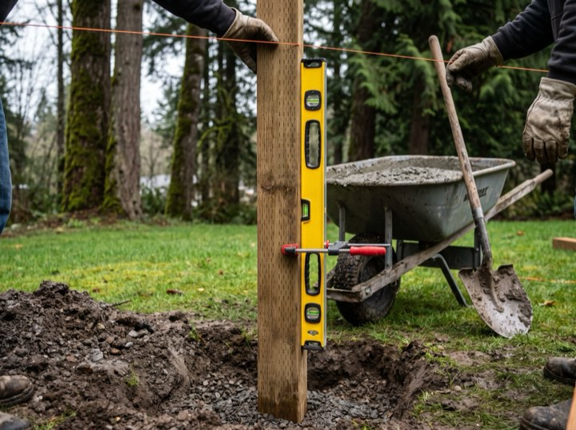
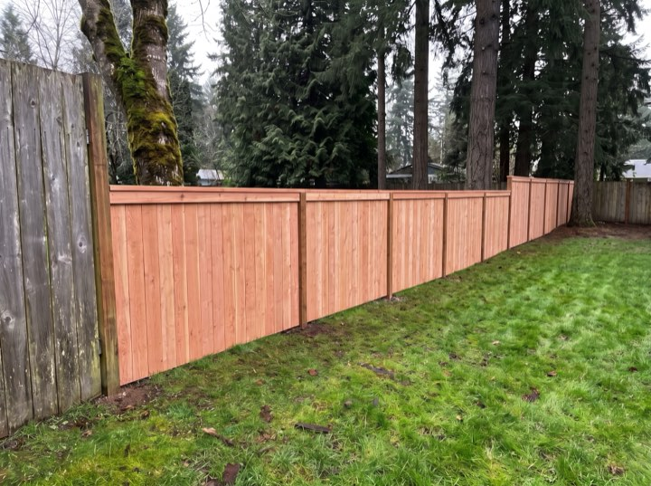
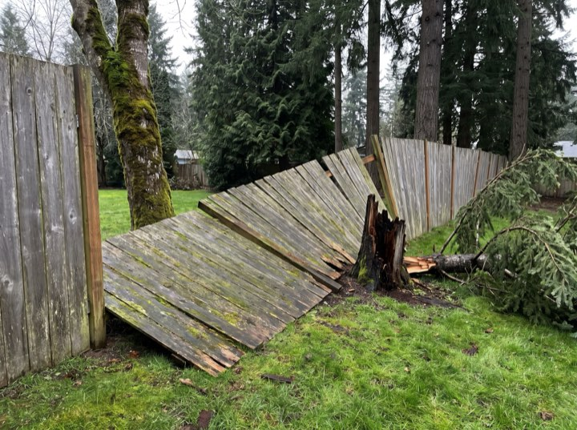
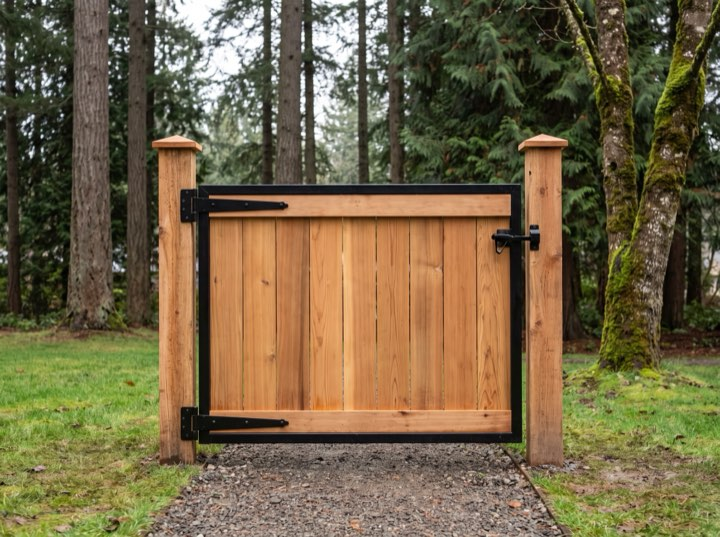
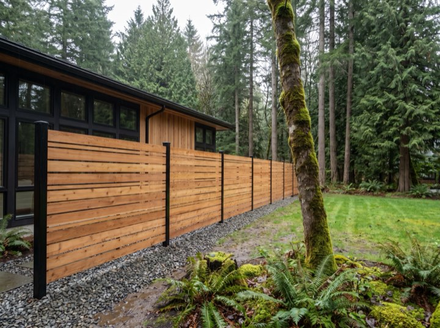
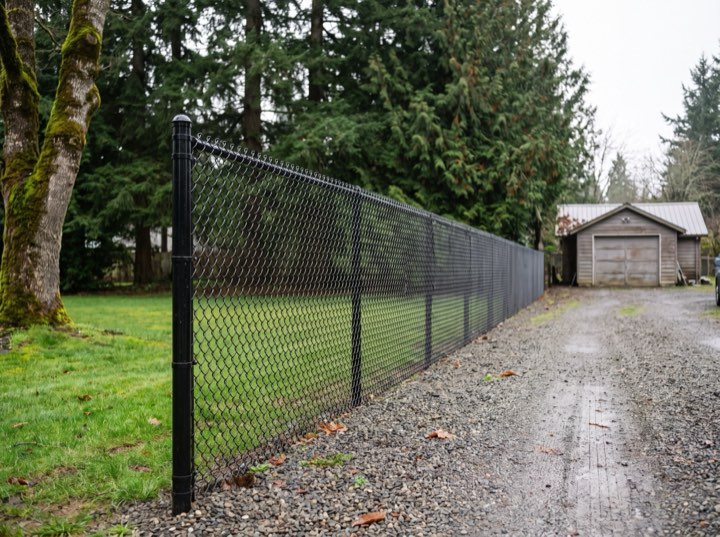
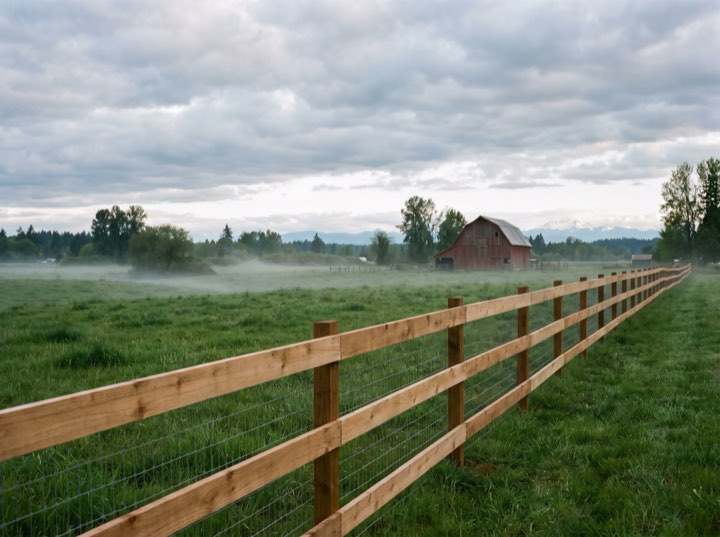
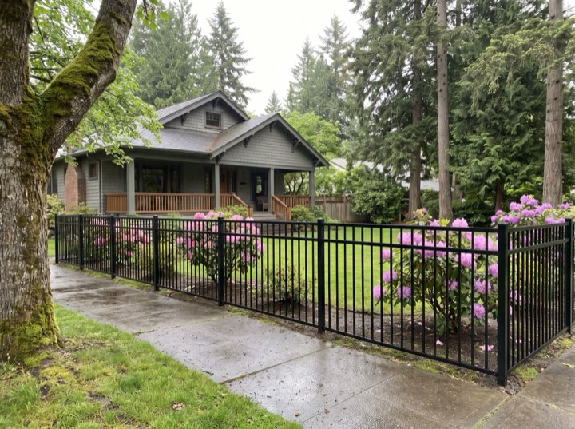
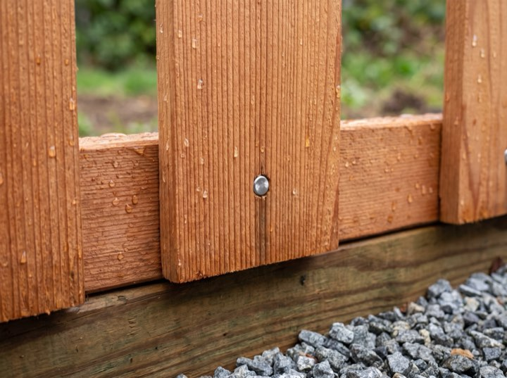

01
Cedar privacy fence
Six-foot western red cedar on 4x4 posts with three rails, a cap rail and a rot board as standard. Dog-ear picket, board-on-board, or horizontal.
Cedar fence and gate contractor · Snohomish & King counties
Cedar privacy, chain link, ranch and ornamental fencing, and the gates to match. Posts set in gravel and concrete, cedar that will still be standing in twenty years, and a written per-foot quote before anyone picks up a shovel.
Quoted by the foot, in writing.
Every quote lists the material, the post size and spacing, the gate count and the price per linear foot, so two quotes can actually be compared.
Fences & gates
Most calls fall into one of these. If yours does not, call anyway. We will tell you straight whether it is a repair, a rebuild, or something another trade should do.
Six-foot western red cedar on 4x4 posts with three rails, a cap rail and a rot board as standard. Dog-ear picket, board-on-board, or horizontal.
Galvanized or black vinyl-coated, four to eight feet, privacy slats if you want them. The right call for dog runs, side yards and commercial lots.
Split rail, three-rail with woven wire, hog panel, and horse-safe no-climb. Acreage is priced by the run, with corner bracing done properly.
Powder-coated aluminum for front yards and pools, vinyl for a fence that never needs staining. Both carry a manufacturer warranty on top of ours.
Walk gates and driveway gates in matching cedar, steel-framed so they never sag. Automatic openers with keypads, installed and wired.
A leaning section, a rotted post, a panel down after a windstorm. We tell you straight whether it is a repair or a rebuild, and price both.
How we build
Forty inches of rain a year and a windstorm most winters. A fence here fails at the post and the bottom board, so that is where the money goes.
Ground-contact rated 4x4 posts, 24 to 30 inches deep, on a gravel base so water drains instead of sitting in the bottom of the hole. Concrete crowned above grade to shed the rain.
A pressure-treated board runs along the bottom and keeps the cedar off the soil. It is the first thing to go on any fence and the cheapest to replace, so it takes the hit instead of your pickets.
Stainless or hot-dipped galvanized ring-shank nails, screws at the gates. Plain steel streaks cedar black inside a year.

Recent work
The same back yard, one week apart. Two panels down and a snapped post on the Monday; the whole run rebuilt in cedar by the weekend. Drag to compare.








Process
The part most fence companies leave vague, which is the part you are wondering about while the old fence is lying on the lawn.
We come out, walk the fence line with you, find the property pins and mark the run. Free, and usually within a couple of days.
A per-foot price with the material, height, post spacing and gate count written down, good for 30 days. Shared line? We quote your neighbor's half separately so you can split it.
Utilities located through 811 first. Most residential fences are one to two days. We haul off the old fence and leave the yard raked.
We walk the whole run with you, check every gate swings and latches, and you have a direct number if anything ever moves.
Reviews
Fence down across the whole back after the January windstorm. They had posts in the ground Thursday and the run finished Saturday. Looks better than the original.
Three quotes, and theirs was the only one that said what size posts and how deep. That is why we picked them.
Talked our neighbor into splitting the shared line and handled both sides. Two invoices, one crew, zero drama.
Fair questions
Most cities in Snohomish and King counties do not require one for a fence up to six feet in the back yard and four feet in the front, but a few do, and corner lots have sight-line rules. We check your city before we quote and pull the permit if one is needed.
Twenty to twenty-five years for the boards with the build we use, and the posts outlast that. Staining every three to four years keeps the colour. Left alone it silvers, which is fine, just a look.
We locate your pins where they exist. If they cannot be found, a survey is the only honest answer, and we will say so rather than build on a guess.
Usually, yes. Bring a photo to the walk-through, or point at it.
A written quote within 48 hours of the walk-through, and most jobs start inside two to three weeks. Storm repairs get moved up the list.
Half at signing to order material, the balance at the walkthrough. Nothing for work you have not seen.
Service area
Based in Everett, WA. If you are a little outside the towns below, call anyway. Acreage jobs travel further.
Free quote
Rough numbers are fine. We will call to set up the walk-through, and the written quote follows within 48 hours of it.
Call, text, or send the form. We come out, measure, and put a real number in writing. If the fence just needs a couple of posts, we will say so.